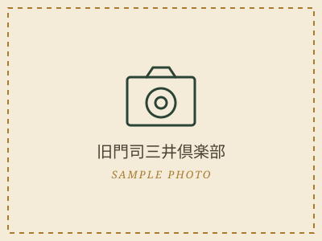
旧門司三井倶楽部
1921年 · 木造ハーフティンバー様式三井物産の社交倶楽部として建てられた洋館。1922年にはアインシュタインが来日時に宿泊し、当時の部屋が記念室として公開されています。1階はレストラン。
私見2階の展示室は空いていることが多く、駅前の喧騒からいったん離れたいときにちょうどいい規模だと思います。
2026年11月1日、私たちは門司港で結婚式を挙げます。この街まで来てくださるゲストの皆さんに、 式の前後の空き時間で少しでも門司港を楽しんでもらえたらと思い、このページを作りました。 観光ガイドというより、個人的な「お気に入りメモ」だと思って読んでください。
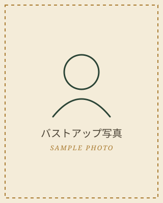
ここにゲストの皆さんへの挨拶文が入ります。当日までの気持ちや、門司港という街を選んだ理由、 この手帖を作った経緯などを、写真とあわせてあとから書き加える予定です。
※ 上の写真とこの文章はサンプルです。後日、実際の写真と挨拶文に差し替えます。
門司港駅は1914年(大正3年)開業。左右対称に伸びる白い外壁とネオ・ルネサンス様式の意匠を持つ木造二階建ての駅舎で、 1988年に鉄道駅としては全国で初めて国の重要文化財に指定されました。2012年から始まった保存修理工事は2019年に完了し、 創建当時に近い姿へと復原されています。
駅舎内には「幸福の泉」と呼ばれる噴水や、大正期の意匠を残す洗面所、旧貴賓室なども残されていて、 ただの通過駅ではなく、それ自体が展示物のような場所になっています。
駅を出て徒歩10分圏内に、大正〜昭和初期の建物や海峡沿いの施設がまとまっています。順番に迷ったら、まず海側に出て歩くのが個人的なおすすめです。

三井物産の社交倶楽部として建てられた洋館。1922年にはアインシュタインが来日時に宿泊し、当時の部屋が記念室として公開されています。1階はレストラン。
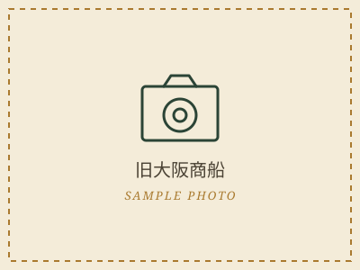
かつて大阪商船(現・商船三井)のオレンジ色の建物。船会社の待合所として使われ、現在はギャラリーや観光案内の機能を持っています。
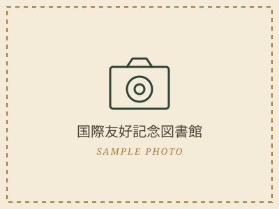
姉妹都市・大連にあった建物を再現した施設。1階は図書館、2階はヨーロッパ料理のレストランになっています。
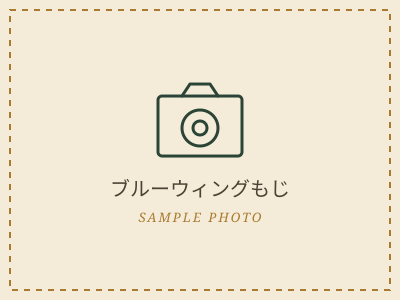
1日数回、橋桁が跳ね上がる可動橋。開閉の時間はあらかじめ決まっていて、跳ね上がる瞬間を橋のたもとで見物する人も多いスポットです。
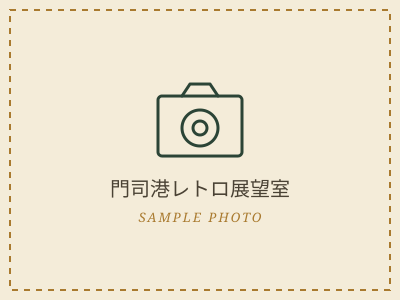
関門海峡と対岸の下関、行き交う船を見下ろせる展望フロア。夕方から夜にかけては港の灯りも見えてきます。
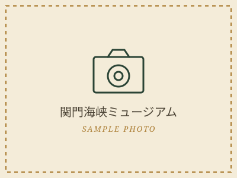
関門海峡の歴史や海運を紹介する体験型ミュージアム。館内に再現された昭和初期の門司港の街並みも見どころです。
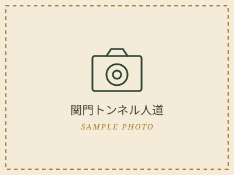
関門トンネルの中には車道と別に人道(歩行者用通路)があり、無料で歩いて福岡県から山口県まで海底を渡れます。所要時間は片道15分ほど。
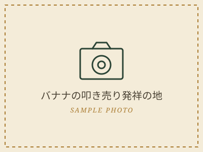
台湾からの輸入バナナが痛む前に威勢よく口上を述べながら売りさばいた「バナナの叩き売り」発祥の地とされ、記念碑が立っています。イベント時には実演が行われることもあります。
洋食文化が根づいた港町らしく、門司港はご飯にカレーソースをかけてチーズをのせ、オーブンで焼き上げる「焼きカレー」の発祥地とされています。 洋食レストランのまかない料理が起源という説もあり、店によって粘度も辛さもチーズの量もかなり違います。
披露宴のあと、有志でもう少し話し足りない人のために。門司港レトロ地区で夜も営業しているお店を3つ紹介します。店名・営業時間などの詳細は下のリンクから公式サイトでご確認ください。
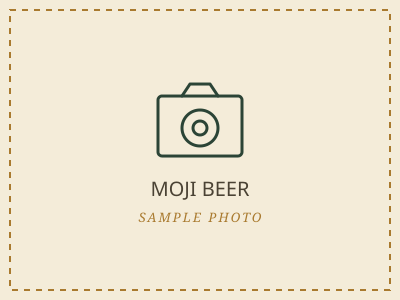
門司港エリアで営業しているお店です。詳しい業態や特徴は公式サイトからご確認いただき、紹介文はあとで正式なものに差し替えます。
公式サイトを見るクラフトビールを楽しめるお店のようです。詳しい業態や特徴は公式サイトからご確認いただき、紹介文はあとで正式なものに差し替えます。
公式サイトを見る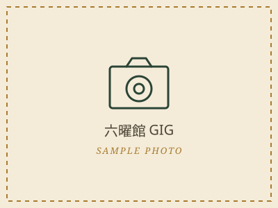
門司港エリアで営業しているお店です。詳しい業態や特徴は公式サイトからご確認いただき、紹介文はあとで正式なものに差し替えます。
公式サイトを見る※ 3店舗とも店名・紹介文は仮のものです。内容をご確認のうえ、正式な情報に差し替えてください。